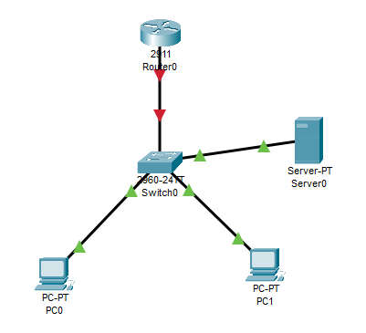
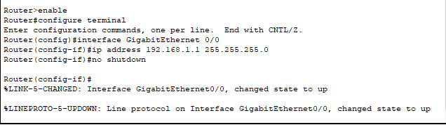
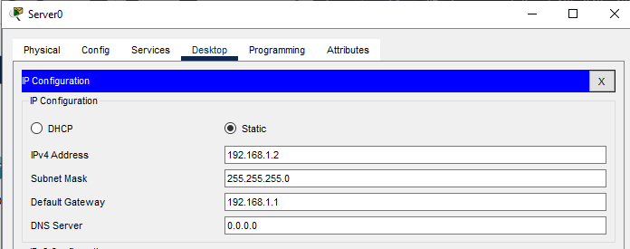
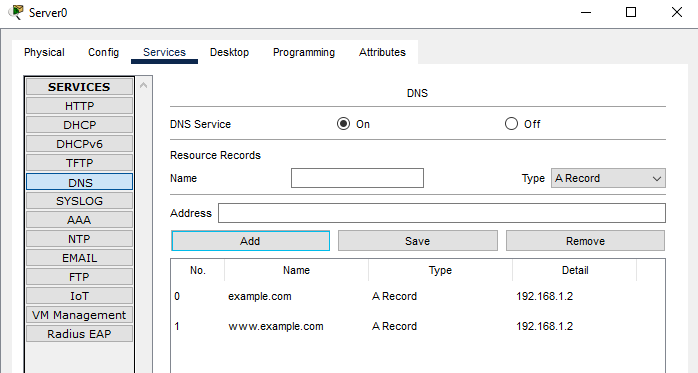
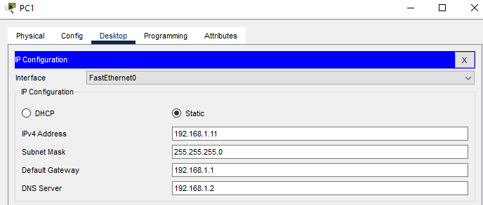
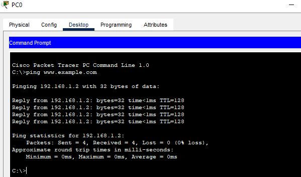

DNS Resolution Issue
Problem Description
Issue Overview:
DNS resolution problems occur when network devices cannot convert domain names to IP addresses. This Layer 7 issue prevents users from accessing network resources using domain names, forcing them to use IP addresses directly or resulting in connection failures.
Common Symptoms:
- Unable to resolve domain names to IP addresses
- "Could not find host" errors when using domain names
- DNS server unreachable messages
- Slow network response when accessing websites
- Applications failing to connect using domain names
Root Causes:
- DNS server service not running
- Incorrect DNS server configuration
- Missing or incorrect DNS records
- Network connectivity issues to DNS server
- Misconfigured client DNS settings
Network Setup

Network Components:
- 1x Cisco 2911 Router (Gateway)
- 1x Cisco 2960 Switch
- 1x DNS Server
- 2x Client PCs
Configuration Steps
Step 1: Router Configuration

Router>enable
Router#configure terminal
Router(config)#interface GigabitEthernet0/0
Router(config-if)#ip address 192.168.1.1 255.255.255.0
Router(config-if)#no shutdownStep 2: DNS Server Setup

Configure DNS Server IP settings:
- IP Address: 192.168.1.2
- Subnet Mask: 255.255.255.0
- Default Gateway: 192.168.1.1
Step 3: DNS Service Configuration

Configure DNS records:
- example.com -> 192.168.1.2
- www.example.com -> 192.168.1.2
Step 4: Client Configuration

Configure client PCs:
- IP Address: 192.168.1.10/11
- Subnet Mask: 255.255.255.0
- Default Gateway: 192.168.1.1
- DNS Server: 192.168.1.2
Problem Demonstration and Solution
Failed DNS Resolution:
When DNS service is disabled, domain name resolution fails with "could not find host" error.
Successful Resolution:
After enabling DNS service and proper configuration, domain names resolve successfully.
Troubleshooting Guide
Common Issues and Solutions:
- Issue: DNS service not running
Solution: Verify DNS service status and enable if needed - Issue: Incorrect DNS records
Solution: Verify DNS record entries and correct any mistakes - Issue: Client cannot reach DNS server
Solution: Check network connectivity and DNS server IP configuration - Issue: Wrong DNS server address on clients
Solution: Verify client DNS settings match the DNS server IP
Verification Commands:
ping [domain-name]- Test DNS resolutionipconfig /all- Verify DNS server settingsnslookup [domain-name]- Test DNS queries
Packet Tracer Simulation
Download the complete Packet Tracer simulation file to practice this configuration:
Download Simulation File